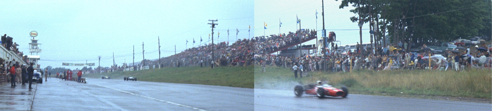

Mosport, Ontario, Canada Photographs taken: 27th August, 1967 |
|  |
This panorama photograph of the straight was taken during the Formula 1 Canadian Grand Prix of 1967. |
| Related Information | ||
| Photo Tour by Chris Mann (May 1994) | ||
| Photos of Circuit Renovations by Chris Mann (Nov.1999) | ||
Photographs ©Fred Young. Reproduced here with kind permission.